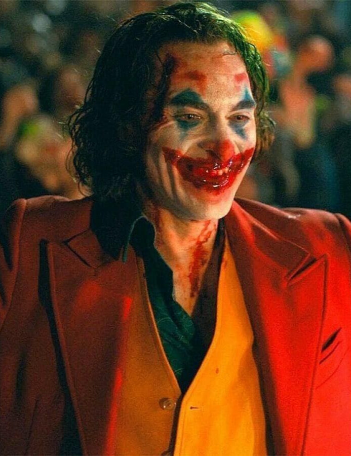

CORINGA
O Joker (no Brasil, também conhecido como Coringa) é um supervilão fictício que aparece nos livros de histórias em quadrinhos norte-americanos publicados pela editora estadunidense DC Comics. Foi criado por Jerry Robinson, Bill Finger e Bob Kane e apareceu pela primeira vez em Batman #1 (abril de 1940). Parcialmente inspirado em Gwynplaine, personagem interpretado por Conrad Veidt, no filme O Homem Que Ri (1928), os créditos para a criação do Coringa são disputados; Kane e Robinson reclamam responsabilidade pelo seu desenho, apesar de reconhecerem a contribuição de Finger na escrita. Também é conhecido por outros nomes como "Príncipe Palhaço do Crime" ou "Bobo da Corte do Genocídio", o personagem não tem habilidades sobre-humanas, mas usa a sua inteligência para desenvolver misturas tóxicas e/ou letais, bem como armamentos temáticos, incluindo cartas de jogo com pontas cortantes, campainhas de brinquedo mortais e flores de lapela que projetam ácido. Apesar de por vezes trabalhar com outros super-vilões, como o Pinguim e o Duas-Caras, e em grupos como Gangue da Injustiça e Legião do Mal, tais relações acabaram muitas vezes por entrar em colapso devido ao constante desejo do Joker em procurar o caos desenfreado. Apesar da sua grande obsessão ser o Batman, o Joker já foi adversário de outros heróis como o Superman e a Mulher Maravilha.